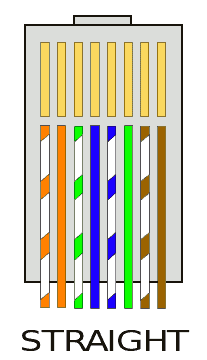
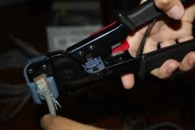

Untuk menyambung kabel UTP ke konektor RJ-45 terdapat dua tipe penyambungan, yaitu straight dan cross, di mana keduanya memiliki fungsi yang berbeda. Pengkabelan dengan cara straight digunakan untuk menyambungkan PC dengan hub/switch sedangkan pengkabelan dengan cara cross digunakan untuk menghubungkan pc ke pc langsung tanpa hub/switch atau menghubungkan hub/switch dengan hub/switch. Untuk praktek penyambungannya, paling tidak kita memerlukan :
1. Kabel UTP
2. Konektor RJ-45
3. Tang Crimping
4. LAN Tester (optional)
Berikut urutan pengkabelannya :
1. Tipe pengkabelan straight
Kita akan coba membuat kabel straight, pertama kupas-lah pelindung luar kabel UTP lalu atur agar lurus kabel-kabel didalamnya. Urutkan posisinya berdasarkan diagram di bawah. Potong ujung kabel dengan gunting agar rata. Masukkan kedalam konektor RJ-45 lalu di crimping dengan tang crimping. Ikuti caranya untuk ujung kedua sama dengan langkah pertama. Masukkan ujung kedua kabel kedalam LAN-tester lalu periksa, jika semua lampu 1-8 terhubung maka kabel ini sudah siap kita pakai.
Urutan Ujung A
1. Putih Orange
2. Orange
3. Putih Hijau
4. Biru
5. Putih Biru
6. Hijau
7. Putih Coklat
8. Coklat
Urutan Ujung B
1. Putih Orange
2. Orange
3. Putih Hijau
4. Biru
5. Putih Biru
6. Hijau
7. Putih Coklat
8. Coklat
Teknik Crimping
1. Siapkan bahan-bahan di atas.
2. Buka lapisan kebel UTP dengan gunting atau alat pemotong lain sesuai dengan ukuran pas agar dapat masuk ke RJ-45.
3. Setelah itu buat susunan warna (tentukan cara pengkabelan cross atau straight)
4. Potong susunan kabel tersebut (ratakan) dengan gunting atau tang crimping. Pilih straight atau cross
5. Masukkan kabel UTP yang telah diratakan ke dalam RJ-45 dengan benar.
6. Masukkan dan jepitkan kabel UTP dan RJ45yang telah disatukan pada lubang yang terdapat pada tang crimping.
7. Untuk pengecekan sambungan, masukkan kedua ujung kabel utp yang telah terpasang RJ-45 ke dalam LAN tester lalu periksa, jika semua lampu 1-8 menyala semua maka kabel ini sudah siap kita pakai.